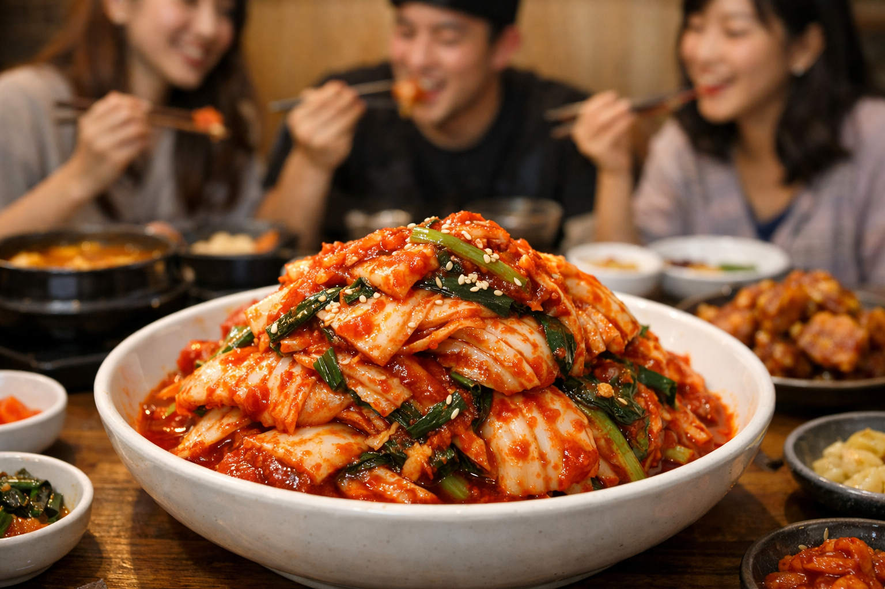

Kimchi adalah makanan tradisional Korea berupa asinan sayur hasil fermentasi yang diberi bumbu pedas. Sayuran yang paling umum dibuat kimci adalah sawi putih dan lobak.
Learn more
Kimchi merupakan salah satu produk pangan hasil dari bioteknologi konvensional yang dibuat melalui proses fermentasi sayuran, terutama dengan sawi putih, dengan bantuan mikroorganisme seperti bakteri asam laktat. Proses fermentasi ini mengubah kandungan gula pada bahan kimchi dan gula yang ditambahkan menjadi asam laktat sehingga menghasilkan rasa asam khas, aroma yang kuat, serta meningkatkan daya simpan pada kimchi tersebut. Selain itu, proses fermentasi juga dapat meningkatkan kandungan probiotik yang bermanfaat bagi kesehatan pencernaan.
Dalam projek kali ini saya membuat produk makanan kimchi dengan variasi jenis gula yaitu gula pasir dan gula merah. Saya membuat produk ini dengan tujuan untuk meneliti variasi gula mana yang menghasilkan kimchi dengan rasa dan kualitas terbaik, dan untuk mengetahui bagaimana cara kerja mikroorganisme bakteri asam laktat dalam fermentasi kimchi. Hasil dari fermentasi yang saya lakukan adalah menunjukan bahwa kimchi yang menggunakan gula merah memiliki rasa yang lebih asam dibanding kimchi yang menggunakan gula putih, tetapi untuk prosesnya, kimchi gula pasir memiliki proses fermentasi yang lebih stabil.
Melalui proses pembuatan kimchi yang telah saya lakukan, dapat diketahui bahwa fermentasi berperan penting dalam mengubah karakteristik bahan pangan, baik dari rasa, tekstur, maupun aroma. Hasil fermentasi menunjukkan bahwa kimchi memiliki tekstur yang lembek tetapi tetap renyah dibandingkan dengan sawi biasa yang masih sangat renyah, rasa yang lebih kuat, serta aroma yang khas akibat aktivitas mikroorganisme dalam fermentasi. Dengan demikian, kimchi dapat menjadi contoh penerapan bioteknologi konvensional sederhana dalam pengolahan pangan yang tidak hanya menghasilkan makanan yang lezat, tetapi juga memiliki nilai gizi dan manfaat kesehatan yang lebih baik.